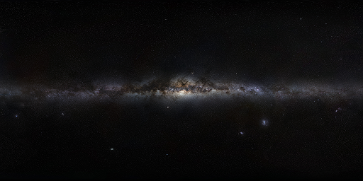
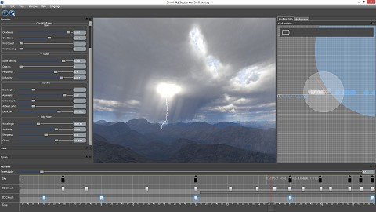
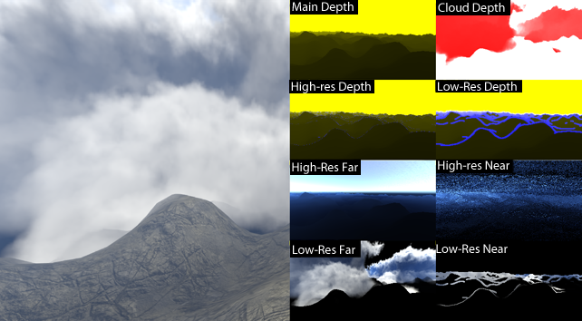

Rendering Techniques in trueSKY
All Simul’s default renderers use a right-handed co-ordinate system with x and y on the horizontal plane, and z up. All units of distance, if not specified as km, are in metres. Angular units are radians, unless specified as degrees. Temperature is in kelvins, unless specified as degrees Celsius.
Weather Rendering is handled by BaseWeatherRenderer. The Weather Renderer owns and manages renderers for sky, clouds, atmospherics and other effects. The Weather Renderer is the main interface between an application and trueSKY.
Clouds
The cloud keyframer is updated from Environment.
Some CloudKeyframe properties are used as per-keyframe values to generated the cloud textures. These textures are then interpolated for rendering:
Clouds are usually drawn to a lower-resolution buffer. The CloudRenderer keeps the cloud volume textures up to date, and draws the clouds volumetrically.
Cosmic Background
The cosmic background texture is drawn first, at an orientation that corresponds to the plane of the Milky Way galaxy - see SetBackgroundBrightness.
It uses a plate-carree projection, aligned with the galactic horizon. Given the vector “view”, which is the direction in galactic co-ordinates, the calculation is:
float azimuth =atan2(view.y,-view.x);
vec2 texcoord =vec2((azimuth/(pi*2.0)),0.5-asin(view.z)/pi);
i.e. the x coordinate is proportional to the azimuth, and the y coordinate is proportional to the sine of the elevation.
You may see some stretching at the top and bottom of the image due to degeneracy of the projection, so it is preferable to have the texture fade to black at the top and bottom edges.
Sun and Stars
Stars are drawn as point sprites, and turn around the axis of the Earth’s rotation, in the same direction as the sun. Stars are usually drawn to the highest-resolution buffer (i.e. the main or final frame buffer or render target). See StarBrightness and MaxStarMagnitude.
The sun is drawn after the stars, also to the main buffer.
Planets
Planets (e.g. the Moon) are drawn by BaseSkyRenderer. A planet texture map can be supplied, and the shader takes sun direction as a parameter - this is used to light the planet (e.g. phases of the moon). Like stars, planets are usually drawn to the main buffer.
Sky and Atmospherics
The sky and atmospherics are drawn to a volumetric texture for which the x and y axes are screen coordinates, and the z axis is distance.
Compositing
The final compositing step puts the sky, atmospherics and clouds to the current rendertarget.
Performance
Rendering performance is mostly dependent on the number of pixels drawn, and the level of cloud detail. Calculation performance - mainly cloud lighting - depends strongly on the grid size - the larger the grid, the more time will be taken to light a cloud subdivision.
It is usual to downsample the cloud part of the sky rendering, controlled by MaximumCubemapResolution in the CloudRenderingOptions.
Go to the performance page to learn more about how to monitor trueSKY’s performance, along with ways to improve it.
Rain and Snow
The precipitation is used to control the amount of rain or snowfall at a given time, whilst the PrecipitationThresholdKm property is used to set the thickness of cloud required for rain to fall (setting this to 0 will allow even the smallest of clouds to produce rain). To switch between snow and rain use rain_to_snow (where 0 is rain, 1 is snow).
Each cloud keyframe has a PrecipitationRegion, which defines the local area of precipitation, if it is not global for the keyframe. The amount of particles used for precipitation can be altered with the MaxParticles property.
Classes derived from simul::clouds::BasePrecipitationRenderer are used to draw the rain or snow particles, while the link simul::clouds::PrecipitationRegion rain streak effectendlink is drawn by the cloud renderer. This class has a property “UseSimulationTime” which determines whether rain and snow speed is based on the simulated time-of-day, or real time in seconds.
Shaders
trueSKY uses effects for rendering. An effect is a collection of shaders - vertex shaders, pixel shaders and so on, along with information on how to combine them, how to set render state when they are used, and what inputs they take.
Platform-specific derived classes of link simul::crossplatform::Effect Effectendlink are created with link simul::crossplatform::RenderPlatform::CreateEffect RenderPlatform::CreateEffectendlink, usually with an extensionless filename passed to the function.
The RenderPlatform looks for a platform-specific shader binary file. Optionally, if a shader binary is not found, or is out of date, the RenderPlatform looks for the shader source and rebuilds it. This is typical in development, but not in releases.
Mixed Resolution Rendering
TrueSKY’s cloud rendering is usually performed at below the full resolution of the screen. This is because, as a raytracing system, its performance is highly dependent on the number of pixels drawn.
Clouds and other volumetric effects can be blended with the full-resolution scene, optionally taking into account MSAA anti-aliasing. To do this, trueSKY uses a mixed-resolution compositor.
The depth values passed to the weather renderer in your depth texture are processed to obtain the needed information for the compositing. This processing uses the projection matrix passed in in your DeviceContext object. The most efficient projection is usually the depth-reversed style, for which the far plane is at z=0.